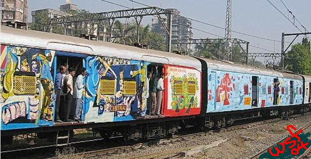

Also in this issue · February 2004
On Our Cover Art
Our cover art is a photograph of a Mumbai train painted in conjunction with the January meeting of the World Social Forum (WSF) in the city. WSF organizers and Open Circle (http://www.opencirclearts.org/about.htm), a Mumbai based artists collective, rented the “vast steel canvas” of the Mumbai railways to give artists an opportunity to work on a public space that is integrated into the life of the city. This is a rare opportunity in a context where the dominant political economy of the art world ensures that many artists find it difficult to sustain their craft while resisting commercial imperatives and de-politicized terrains of aesthetic engagement – where art is ‘for’ private galleries and wealthy collectors, advertising conglomerates and other ‘patrons’ of art as mere commodity. lines understands this initiative as an attempt to conceive of the Mumbai tracks as itself a massive metropolitan gallery; to conceive of aesthetic engagement by producers and ‘consumers’ of art in terms of dialogue and exchange, inspiration and challenge. As every train pulls in and out of a station, or whizzes through the city as metro-gallery, it may have helped catalyze an opportunity to interpret, question and revisit issues such as the war in Iraq, the struggle around the Narmada Dam, the genocide in Gujarat, the Dalit movement and so on – issues that also preoccupy the work of Open Circle artists/WSF conversations/the Mumbai resistance and, last but not least (!!), the pages of lines.
For more about this initiative see http://web.mid-day.com/news/city/2003/december/72003.htm.
The photograph was taken by Aaron Moore; For Moore’s analysis of WSF see (insert link)
